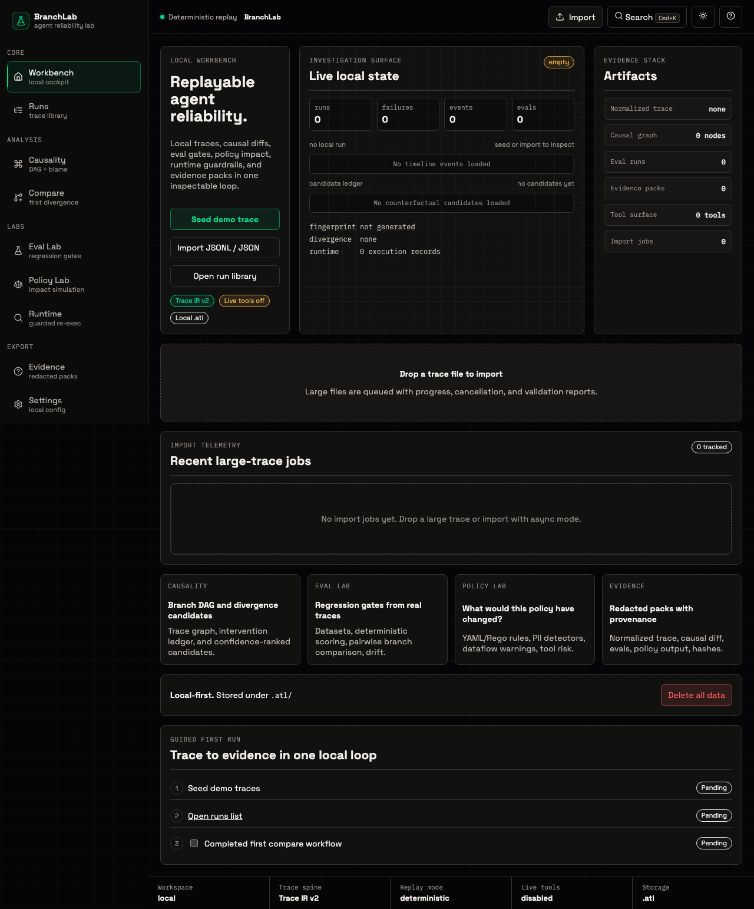
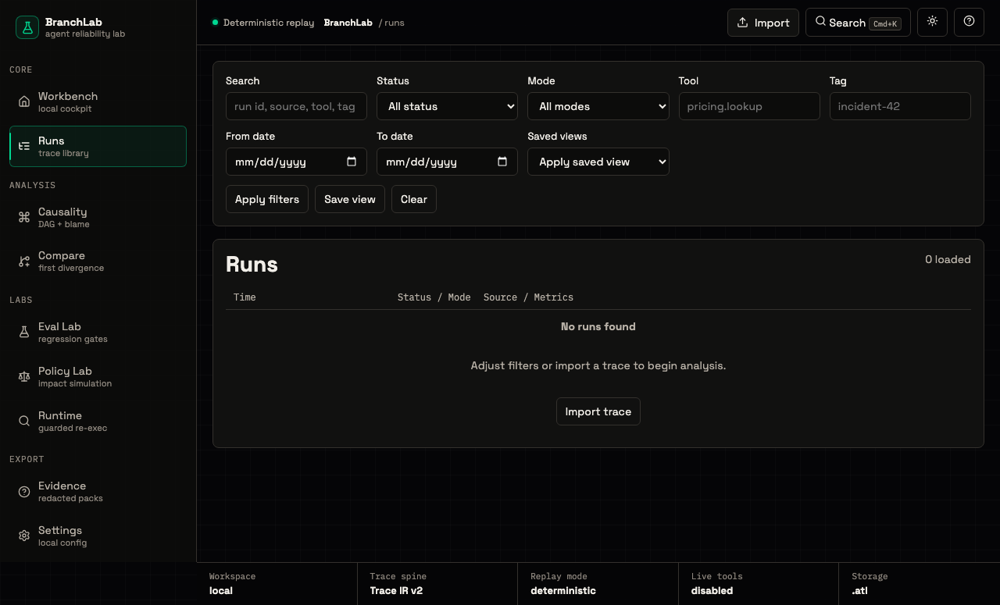
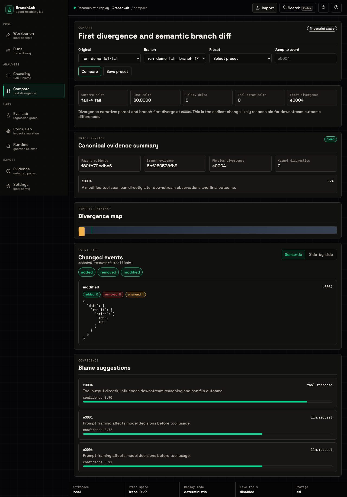

BranchLab turns traces into replayable proof: spans, hashes, branches, evals, policies, and redacted evidence packs.
Simple, inspectable trace mathematics at the core. Provider adapters at the edge. Every claim backed by a fingerprint.
Runs, failures, event counts, import telemetry, runtime records, and provenance signals sit in the first viewport.

Raw events stay available, but the workbench pushes hashes, tools, tags, status, and trace structure forward.

Parent and branch traces get replay fingerprints, causal candidates, semantic diffs, and a canonical evidence summary.

Branch DAGs, selected-span notes, confidence-ranked candidates, and resolved investigations become part of the evidence record.
Local-first. Provider-neutral. Deterministic by default. Built for engineers who need proof.